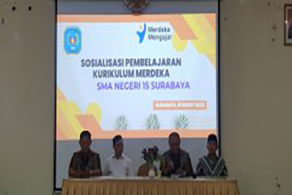

Pengumuman Pemetaan Kelas XI Tahun Pelajaran 2023-2024
Menindaklajuti hasil dari pemetaan peserta didik pada alternatif kelompok mata pelajaran peminatan fase F tahun dan akan dimulainya kegiatan belajar mengajar tahun pelajaran 2023-2024...
READ MORE >>
Pengumuman Pemetaan Peserta Didik Dalam Alternatif Kelompok Mata Pelajaran Peminatan Fase F Tahun Pelajaran 2023-2024
Serangkaian proses asesmen yang sudah dilakukan oleh guru bimbingan konseling...
READ MORE >>

READ MORE >>
IMPLEMENTASI KURIKULUM MERDEKA 2023
Melanjutkan sebelumnya sosialaisasi yang diadakan pada tahun 30 Juli 2022 lalu. Sosialisasi IKM hari ini, Jumat 10 Maret 2023 berfokus kepada evaluasi. Evaluasi toidak hanya ditujukan...
READ MORE >>